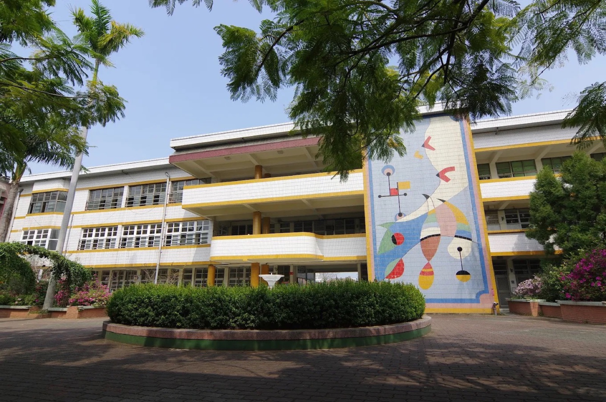
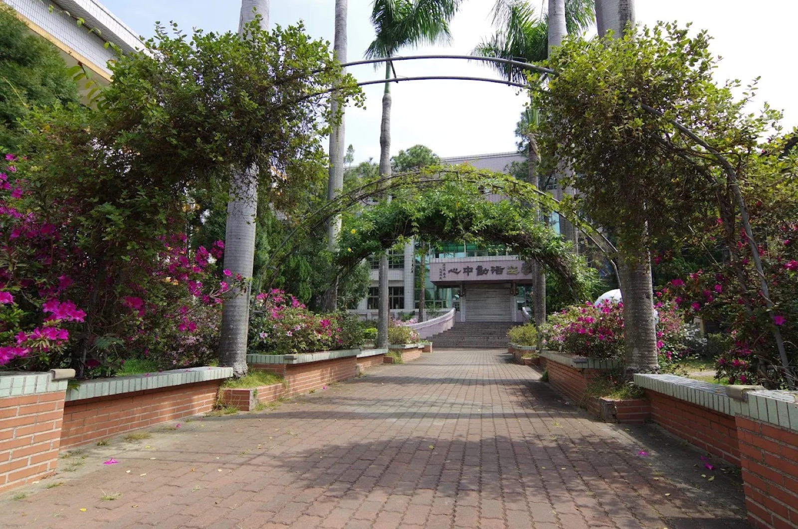
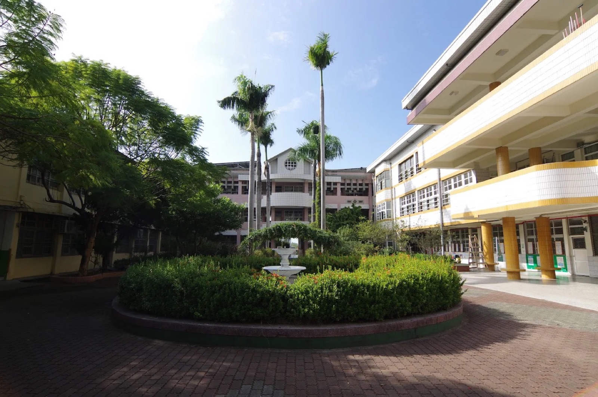
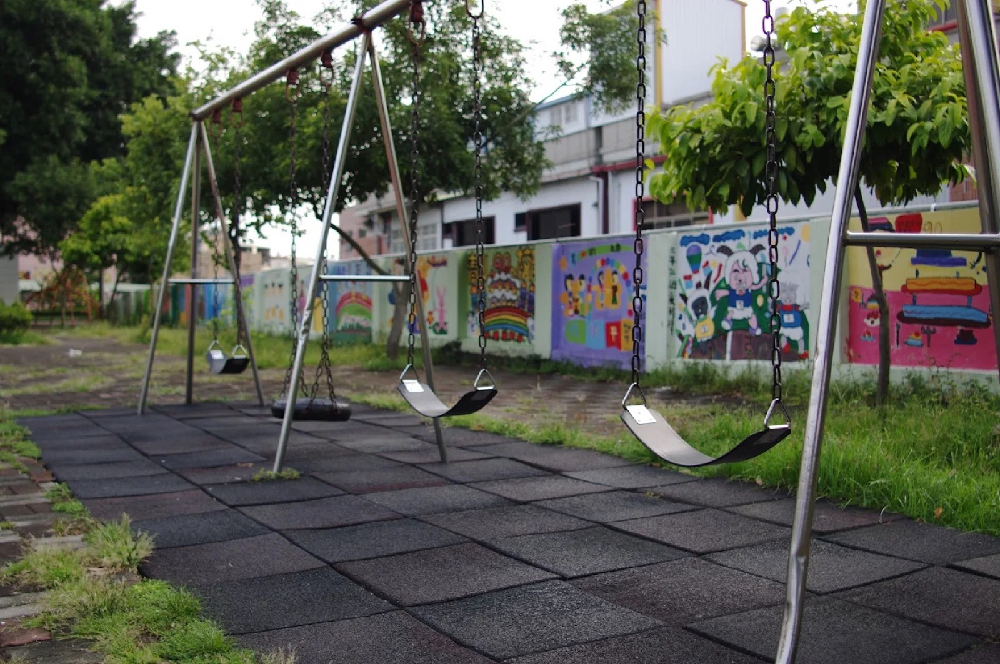
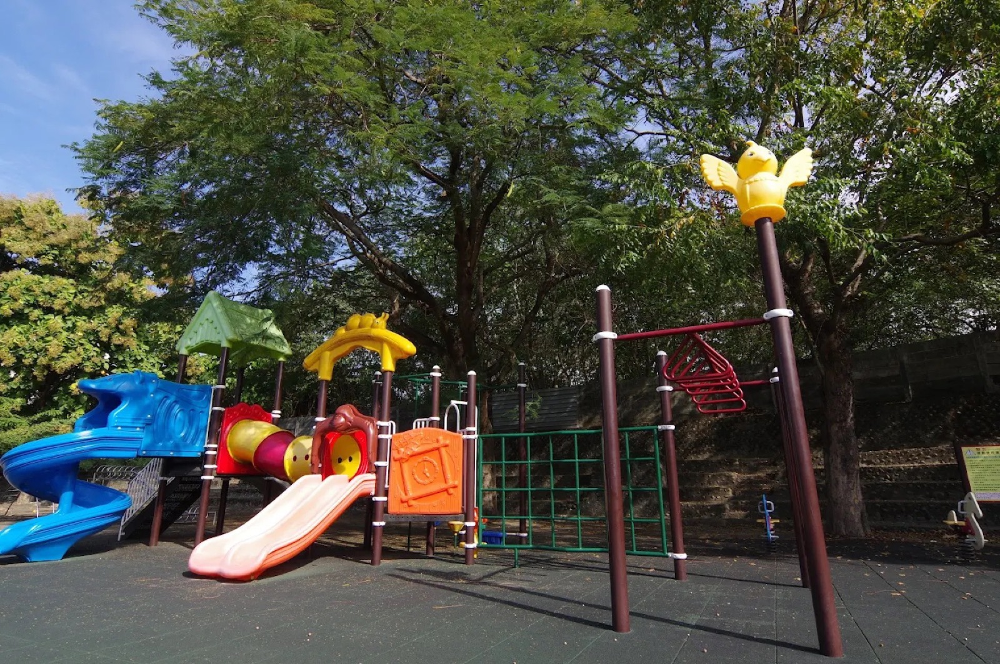
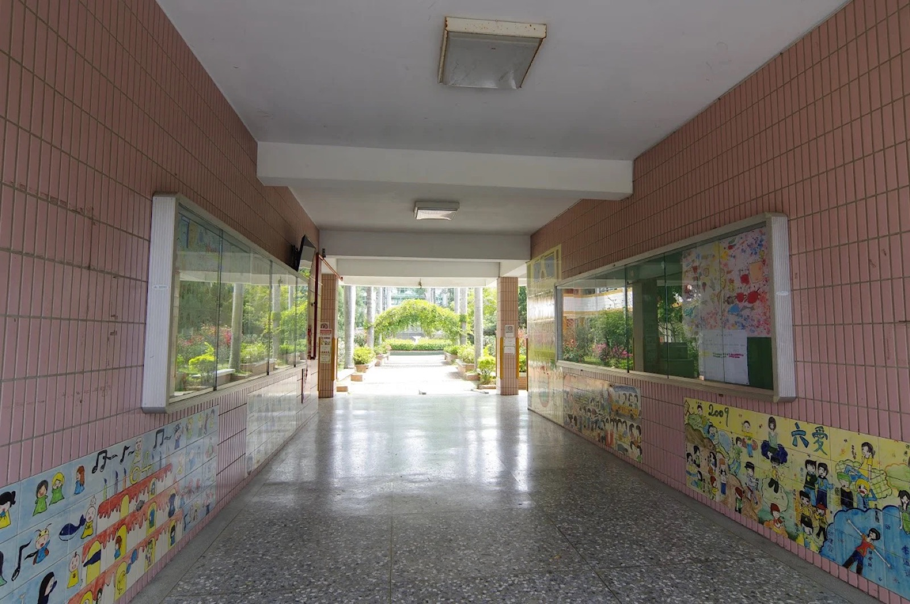
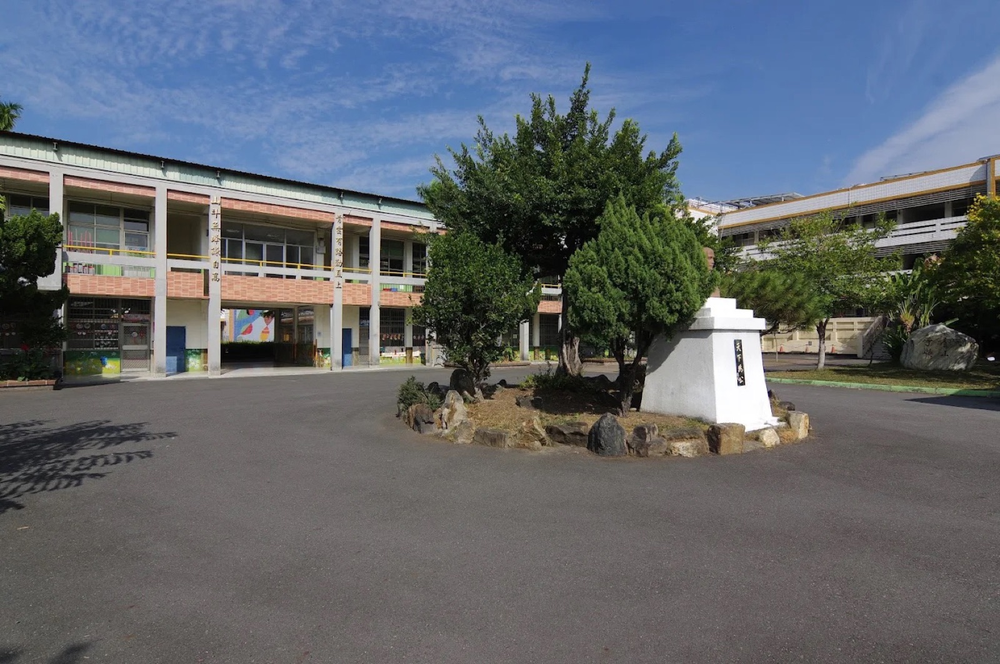

Mosaic Mural Building
藝術壁畫大樓
A tiled mosaic mural rises across the main teaching building — colour and art greeting students every morning.
Our school is surrounded by nature, with lots of trees, plants, and animals all around. We even made a special map to help everyone learn about the different plants on our campus!
校園裡有許多樹木、植物和小動物，對於喜歡探索戶外的學生來說，這裡是個完美的地方。我們還製作了一張特別的校園植物地圖，幫助大家認識校園裡不同的植物。
At Chingshan, there are many exciting clubs for students to enjoy — a recorder team, a track team, and a Tai Chi fan group. Our recorder team and track team have won many awards, and the Tai Chi fan group gets invited to perform at special events. We also teach students computer programming, which helps them learn how to be creative with technology.
在青山，學生可以參加許多有趣的社團——直笛隊、田徑隊和太極扇隊。直笛隊及田徑隊在歷年彰化縣各項音樂比賽及中小學聯運皆榮獲佳績，太極扇隊常獲邀參與各項慶典活動表演，深獲各界好評。本校近年也與高雄師範大學合作推動資訊教育程式設計，在彰化縣國中小學生 SCRATCH 應用競賽國小遊戲組榮獲優等。
Students at Chingshan can also try calligraphy, where they practice beautiful writing, or Taekwondo. And of course, we love reading — our school has a great selection of books that help students grow their imagination and learn new things.
學生在青山勤習書畫、練跆拳道，動靜合宜；博覽童書、啟迪文思，校園內的藝文創作琳瑯滿目。
At Chingshan, we believe in working hard, being kind, and staying humble. Our teachers, staff, and parents work together to support each and every student, so they can do their best and reach their goals.
「青雲有路勤直上，山斗無峰謙自高」，是青山師生恪守自勵的良言，也呼應校訓「勤樸謙恭、青山崢嶸」八字。青山有專業的教師團隊、熱忱的行政團隊、熱心的義工團隊、堅強的家長會，期望每位學子都能品格出眾、出人頭地。
A campus alive with murals, gardens, and play — every corner shaped for curious kids.
校園裡充滿壁畫、花園與遊戲空間，每個角落都是為了讓孩子盡情探索而設計。






